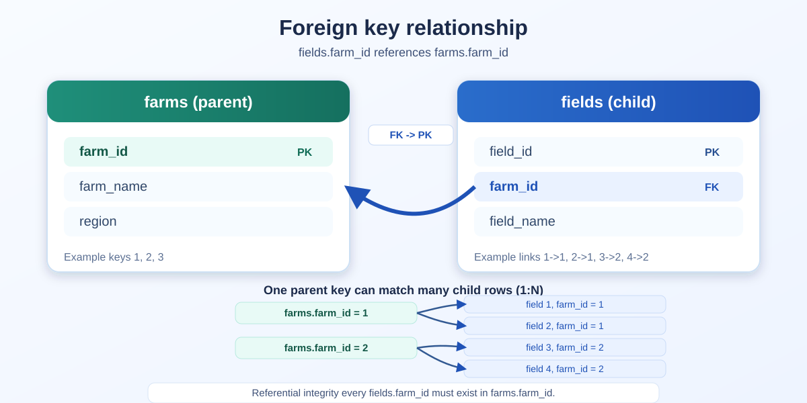
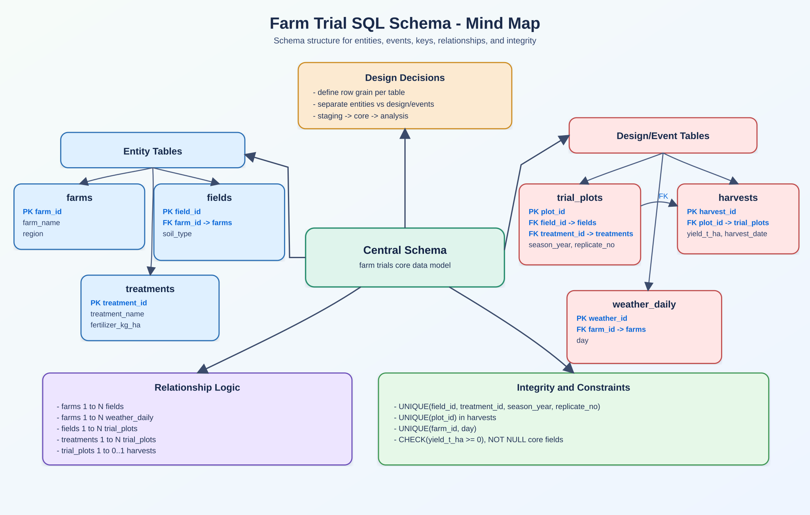
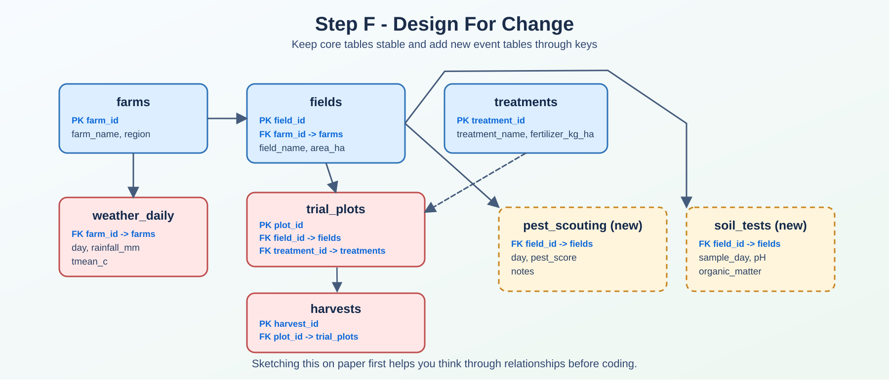
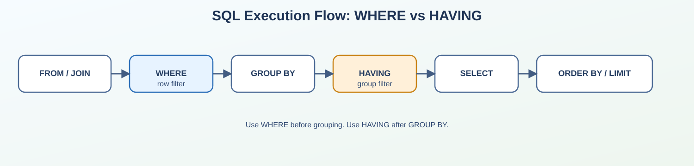
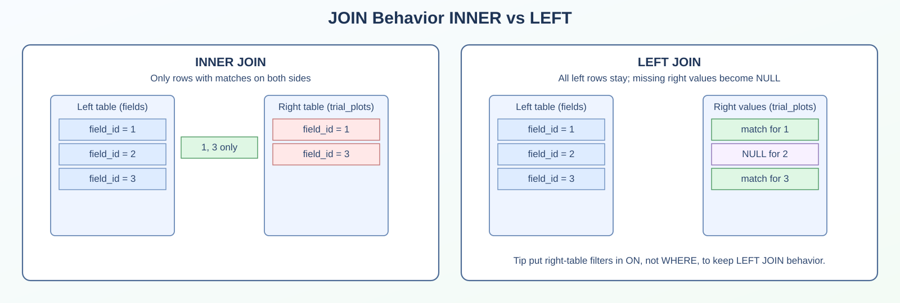
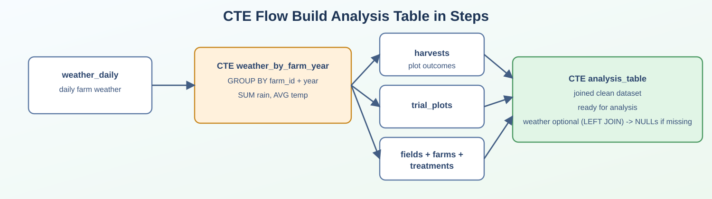
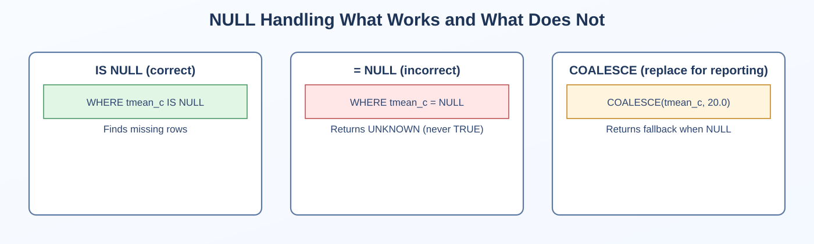
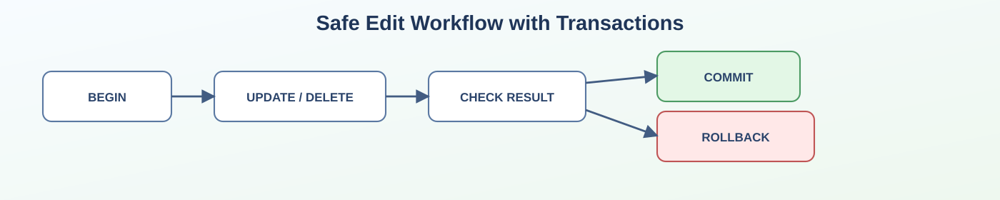

Primary key
A primary key is a column (or combination of columns) that uniquely identifies each row.
Example farm_id in farms.
No duplicates, no missing values.
Think of it like a unique ID card.
In this post we move from SQL fundamentals to a practical farm trial workflow. We cover tables and keys, schema design, data loading, core queries, quality checks, and clear interpretation limits.
As a statistician working with agriculture and breeding data, I can tell you that SQL is one of the most useful skills you can learn if you work with yield, field trials, weather, soil, or farm performance.
If spreadsheets are your current home, think of SQL as the next level for at least two main reasons:
In agriculture, this happens quickly. Examples:
Without SQL, people copy-paste and make accidental mistakes. With SQL, you ask clear questions and get reproducible answers.
Another reason this matters in field trial work is that your SQL query becomes a transparent analysis recipe. If someone asks “how did you compute that treatment average?â€, you can show the exact logic instead of manually reconstructing spreadsheet steps.
A few real questions SQL helps you answer are:
I also want to prevent a common beginner frustration such as writing queries that “kind of work†but return the wrong rows. I will show you exactly how to avoid the classic pitfalls (especially forgetting WHERE, confusing NULL, and using the wrong type of join).
Before writing SQL, let us define the core concepts in plain language.
A table is like a spreadsheet tab.
Example fields table.
It stores one type of thing (fields).
A row is one record.
Example one row in fields might be field_id = 101, field_name = 'North 01'.
A column is one variable.
Example soil_type is a column.
A primary key is a column (or combination of columns) that uniquely identifies each row.
Example farm_id in farms.
No duplicates, no missing values.
Think of it like a unique ID card.
A foreign key links one table to another.
Example fields.farm_id points to farms.farm_id.
It enforces consistency every field must belong to a real farm.
A possible analogy is to think about filing cabinets.
Primary key = unique folder number inside one cabinet. Foreign key = reference to a folder in another cabinet.
This is what allows us to connect tables correctly with joins.

Figure. Foreign key relationship example. fields.farm_id must match an existing farms.farm_id, creating a reliable one-to-many link for joins.
Let us imagine a realistic but small trial program. You manage three farms in different regions. Each farm has fields. In each field, you test fertilizer treatments across seasons. You also collect daily weather at farm level.
Our dataset has six tables
farms one row per farm.fields one row per field (each field belongs to a farm).treatments one row per treatment level.trial_plots one row per field treatment season plot assignment.harvests one row per harvested plot result.weather_daily one row per farm day weather record.This structure is very common in production analytics, and can be seen as
“Entity†tables (farm, field, treatment) describe the system.
“Design/event†tables (trial_plots, harvest, daily weather) store assignment and repeated observations over time.
Note that this structure is not only “database theoryâ€. It directly affects analysis quality because
If you are just starting, schema design may feel abstract. A practical way to think is to answer these questions first
In this farm trial example, we separate entities from events and focus on treatment response, missing records, and weather context.

Figure. Schema design mind map for this tutorial. Blue labels indicate the variables that link tables.
farms (parent table)
| farm_id | farm_name | region |
|---|---|---|
| 1 | Green Valley Farm | North |
| 2 | Riverbend Farm | Central |
| 3 | Sunrise Farm | South |
fields (each field belongs to a farm through farm_id)
| field_id | farm_id | field_name | area_ha | soil_type |
|---|---|---|---|---|
| 1 | 1 | North-01 | 12.50 | clay_loam |
| 2 | 1 | North-02 | 10.00 | sandy_loam |
| 3 | 2 | Central-01 | 15.20 | silt_loam |
| 4 | 2 | Central-02 | 9.80 | clay |
| 5 | 3 | South-01 | 14.10 | sandy |
| 6 | 3 | South-02 | 11.40 | loam |
treatments (reference table for treatment definitions)
| treatment_id | treatment_name | fertilizer_kg_ha |
|---|---|---|
| 1 | Control | 0 |
| 2 | Nitrogen_Low | 60 |
| 3 | Nitrogen_Medium | 120 |
| 4 | Nitrogen_High | 180 |
trial_plots (design/event table linking field_id + treatment_id + season_year)
| plot_id | field_id | treatment_id | season_year | replicate_no |
|---|---|---|---|---|
| 1 | 1 | 1 | 2024 | 1 |
| 2 | 1 | 3 | 2024 | 1 |
| 3 | 1 | 1 | 2025 | 1 |
| 4 | 1 | 4 | 2025 | 1 |
| 10 | 3 | 2 | 2024 | 1 |
| 11 | 3 | 1 | 2025 | 1 |
| 12 | 3 | 3 | 2025 | 1 |
| 18 | 5 | 2 | 2024 | 1 |
| 24 | 6 | 3 | 2025 | 1 |
harvests (event table linked to trial_plots by plot_id)
| harvest_id | plot_id | yield_t_ha |
|---|---|---|
| 1 | 1 | 6.20 |
| 2 | 2 | 7.00 |
| 3 | 3 | 6.10 |
| 4 | 4 | 7.40 |
| 10 | 10 | 7.60 |
| 11 | 11 | 6.90 |
| 12 | 12 | 7.90 |
| 18 | 18 | 5.60 |
| 24 | 24 | 6.20 |
weather_daily (event table linked to farms by farm_id)
| weather_id | farm_id | day | rainfall_mm | tmean_c |
|---|---|---|---|---|
| 1 | 1 | 2024-06-01 | 12.4 | 18.5 |
| 2 | 1 | 2024-06-02 | 0.0 | 19.1 |
| 4 | 1 | 2025-06-01 | 18.0 | 17.9 |
| 7 | 2 | 2024-06-01 | 8.1 | 20.0 |
| 8 | 2 | 2024-06-02 | 1.2 | 21.3 |
| 10 | 2 | 2025-06-01 | 10.5 | 19.4 |
| 11 | 2 | 2025-06-02 | 3.0 | NULL |
| 13 | 3 | 2024-06-01 | 2.0 | 23.8 |
| 16 | 3 | 2025-06-01 | 1.0 | 24.1 |
Link summary
fields.farm_id links with farms.farm_id.trial_plots.field_id links with fields.field_id.trial_plots.treatment_id links with treatments.treatment_id.harvests.plot_id links with trial_plots.plot_id.weather_daily.farm_id links with farms.farm_id.The core idea is that trial_plots stores treatment assignment at plot level, harvests stores measured outcomes for those plots, and weather_daily connects environmental context to the same farms.
Grain means “what one row representsâ€.
Entity tables (farms, fields, treatments) one row per entity.
Design/event tables (trial_plots, harvests, weather_daily) one row per assignment or time based observation.
If grain is unclear, everything after that gets messy (duplicates, wrong joins, wrong counts).
Use the same linking variables shown above and enforce them with primary keys (IDs in parent tables) and foreign keys (matching IDs in child/event tables).
This gives you safe joins and enforces referential integrity.
Primary keys identify rows technically, but you also need domain level uniqueness.
Examples for this project
trial_plots, you usually expect one row per field_id + treatment_id + season_year + replicate_no.harvests, you usually expect one row per plot_id.weather_daily, you usually expect one row per farm_id + day.That can be enforced with unique constraints
ALTER TABLE trial_plots
ADD CONSTRAINT uq_trialplot_field_treat_year_rep
UNIQUE (field_id, treatment_id, season_year, replicate_no);
ALTER TABLE harvests
ADD CONSTRAINT uq_harvest_plot
UNIQUE (plot_id);
ALTER TABLE weather_daily
ADD CONSTRAINT uq_weather_farm_day
UNIQUE (farm_id, day);This protects your analysis from duplicate event records.
Use types and constraints to prevent bad data early.
DATE for dates (harvest_date, day).
numeric types for quantities (yield_t_ha, rainfall_mm, area_ha).
NOT NULL for required fields.
CHECK for physical logic (for example non negative yield).
Your schema is the first quality control layer.
A practical production pattern
farms, fields, trial_plots, harvests, weather_daily).This keeps raw import problems away from final reporting.
Field trial data evolves. Plan for that.
A practical habit is to sketch the schema on a piece of paper first. Writing it by hand is often the best way to think through table grain and links before coding.

Figure. Extension ready schema sketch with added event tables (for example pest_scouting and soil_tests).
New treatment levels can be added without redesigning trial_plots or harvests.
new farms/fields can be inserted without touching historical records.
additional event tables (for example pest scouting, soil tests) can be linked by keys.
Good schema design makes future extension easier and safer.
Is each table grain explicit?
Are primary and foreign keys defined?
Are business level uniqueness constraints present?
Are required columns NOT NULL where appropriate?
Are sanity checks (CHECK) defined for critical numeric values?
Can you answer your main trial questions with straightforward joins?
Below is a clean schema for the six required tables. I will use PostgreSQL syntax and keep it beginner friendly.
-- Optional cleanup if you are re-running this tutorial script.
-- Drop child tables first (they depend on parent tables).
DROP TABLE IF EXISTS harvests;
DROP TABLE IF EXISTS trial_plots;
DROP TABLE IF EXISTS weather_daily;
DROP TABLE IF EXISTS fields;
DROP TABLE IF EXISTS treatments;
DROP TABLE IF EXISTS farms;
-- 1) Farms table
CREATE TABLE farms (
farm_id INT GENERATED ALWAYS AS IDENTITY PRIMARY KEY,
farm_name TEXT NOT NULL,
region TEXT NOT NULL
);
-- 2) Fields table
CREATE TABLE fields (
field_id INT GENERATED ALWAYS AS IDENTITY PRIMARY KEY,
farm_id INT NOT NULL,
field_name TEXT NOT NULL,
area_ha NUMERIC(8,2) NOT NULL,
soil_type TEXT NOT NULL,
CONSTRAINT fk_fields_farm
FOREIGN KEY (farm_id) REFERENCES farms (farm_id)
);
-- 3) Treatments table
CREATE TABLE treatments (
treatment_id INT GENERATED ALWAYS AS IDENTITY PRIMARY KEY,
treatment_name TEXT NOT NULL,
fertilizer_kg_ha NUMERIC(8,2) NOT NULL
);
-- 4) Trial plots table (plot level treatment assignment)
CREATE TABLE trial_plots (
plot_id INT GENERATED ALWAYS AS IDENTITY PRIMARY KEY,
field_id INT NOT NULL,
treatment_id INT NOT NULL,
season_year INT NOT NULL,
replicate_no INT NOT NULL DEFAULT 1,
block_no INT,
CONSTRAINT fk_trialplots_field
FOREIGN KEY (field_id) REFERENCES fields (field_id),
CONSTRAINT fk_trialplots_treatment
FOREIGN KEY (treatment_id) REFERENCES treatments (treatment_id)
);
-- 5) Harvests table
CREATE TABLE harvests (
harvest_id INT GENERATED ALWAYS AS IDENTITY PRIMARY KEY,
plot_id INT NOT NULL,
yield_t_ha NUMERIC(8,2) NOT NULL,
harvest_date DATE NOT NULL,
CONSTRAINT fk_harvests_plot
FOREIGN KEY (plot_id) REFERENCES trial_plots (plot_id),
CONSTRAINT chk_nonnegative_yield
CHECK (yield_t_ha >= 0)
);
-- 6) Daily weather table
CREATE TABLE weather_daily (
weather_id INT GENERATED ALWAYS AS IDENTITY PRIMARY KEY,
farm_id INT NOT NULL,
day DATE NOT NULL,
rainfall_mm NUMERIC(8,2) NOT NULL,
tmean_c NUMERIC(5,2),
CONSTRAINT fk_weather_farm
FOREIGN KEY (farm_id) REFERENCES farms (farm_id)
);GENERATED ALWAYS AS IDENTITY auto incrementing IDs.PRIMARY KEY unique row identity.NOT NULL value must be present.FOREIGN KEY (...) REFERENCES ... links tables and protects data integrity.CHECK (yield_t_ha >= 0) prevents impossible negative yield values.PostgreSQL and Oracle both support identity columns (GENERATED ... AS IDENTITY).
Older PostgreSQL tutorials often use SERIAL; Oracle does not use SERIAL.
TEXT is PostgreSQL specific; in Oracle you usually use VARCHAR2(...).
Now we load enough rows to practice filtering, joining, grouping, and quality checks.
In production work this is not the most common way to load data. Most teams load SQL tables from CSV files, data pipelines, ETL or ELT tools, application jobs, or direct connectors from source systems. Here we use direct INSERT statements only to simplify the idea and keep the tutorial fully reproducible in one place.
-- Farms
INSERT INTO farms (farm_name, region) VALUES
('Green Valley Farm', 'North'),
('Riverbend Farm', 'Central'),
('Sunrise Farm', 'South');
-- Fields
INSERT INTO fields (farm_id, field_name, area_ha, soil_type) VALUES
(1, 'North-01', 12.50, 'clay_loam'),
(1, 'North-02', 10.00, 'sandy_loam'),
(2, 'Central-01', 15.20, 'silt_loam'),
(2, 'Central-02', 9.80, 'clay'),
(3, 'South-01', 14.10, 'sandy'),
(3, 'South-02', 11.40, 'loam');
-- Treatments
INSERT INTO treatments (treatment_name, fertilizer_kg_ha) VALUES
('Control', 0),
('Nitrogen_Low', 60),
('Nitrogen_Medium', 120),
('Nitrogen_High', 180);
-- Trial plots
INSERT INTO trial_plots (field_id, treatment_id, season_year, replicate_no) VALUES
(1, 1, 2024, 1),
(1, 3, 2024, 1),
(1, 1, 2025, 1),
(1, 4, 2025, 1),
(2, 1, 2024, 1),
(2, 3, 2024, 1),
(2, 1, 2025, 1),
(2, 4, 2025, 1),
(3, 1, 2024, 1),
(3, 2, 2024, 1),
(3, 1, 2025, 1),
(3, 3, 2025, 1),
(4, 1, 2024, 1),
(4, 2, 2024, 1),
(4, 1, 2025, 1),
(4, 3, 2025, 1),
(5, 1, 2024, 1),
(5, 2, 2024, 1),
(5, 1, 2025, 1),
(5, 3, 2025, 1),
(6, 1, 2024, 1),
(6, 2, 2024, 1),
(6, 1, 2025, 1),
(6, 3, 2025, 1);
-- Harvests
INSERT INTO harvests (plot_id, yield_t_ha, harvest_date) VALUES
(1, 6.20, '2024-10-05'),
(2, 7.00, '2024-10-05'),
(3, 6.10, '2025-10-06'),
(4, 7.40, '2025-10-06'),
(5, 5.50, '2024-10-07'),
(6, 6.40, '2024-10-07'),
(7, 5.40, '2025-10-07'),
(8, 6.80, '2025-10-07'),
(9, 7.10, '2024-10-10'),
(10, 7.60, '2024-10-10'),
(11, 6.90, '2025-10-11'),
(12, 7.90, '2025-10-11'),
(13, 6.80, '2024-10-09'),
(14, 7.20, '2024-10-09'),
(15, 6.70, '2025-10-10'),
(16, 7.60, '2025-10-10'),
(17, 4.90, '2024-10-12'),
(18, 5.60, '2024-10-12'),
(19, 4.70, '2025-10-12'),
(20, 5.90, '2025-10-12'),
(21, 5.30, '2024-10-13'),
(22, 5.90, '2024-10-13'),
(23, 5.10, '2025-10-13'),
(24, 6.20, '2025-10-13');
-- Weather daily (with some missing tmean_c to teach NULL handling)
INSERT INTO weather_daily (farm_id, day, rainfall_mm, tmean_c) VALUES
(1, '2024-06-01', 12.4, 18.5),
(1, '2024-06-02', 0.0, 19.1),
(1, '2024-06-03', 5.2, NULL),
(1, '2025-06-01', 18.0, 17.9),
(1, '2025-06-02', 2.5, 18.4),
(1, '2025-06-03', 0.0, 20.2),
(2, '2024-06-01', 8.1, 20.0),
(2, '2024-06-02', 1.2, 21.3),
(2, '2024-06-03', 0.0, 22.1),
(2, '2025-06-01', 10.5, 19.4),
(2, '2025-06-02', 3.0, NULL),
(2, '2025-06-03', 0.0, 20.1),
(3, '2024-06-01', 2.0, 23.8),
(3, '2024-06-02', 0.0, 24.5),
(3, '2024-06-03', 0.0, 25.0),
(3, '2025-06-01', 1.0, 24.1),
(3, '2025-06-02', 0.0, NULL),
(3, '2025-06-03', 0.0, 24.9);From this point, every query has SQL code line by line explanation a small illustrative expected result
SELECT farm_id, farm_name, region
FROM farms;Line by line
SELECT farm_id, farm_name, region choose exactly the columns you want.FROM farms read rows from the farms table.Expected result (illustrative)
| farm_id | farm_name | region |
|---|---|---|
| 1 | Green Valley Farm | North |
| 2 | Riverbend Farm | Central |
| 3 | Sunrise Farm | South |
*SELECT *
FROM treatments;Line by line
SELECT * return all columns in the table.FROM treatments source table.Expected result (illustrative)
| treatment_id | treatment_name | fertilizer_kg_ha |
|---|---|---|
| 1 | Control | 0 |
| 2 | Nitrogen_Low | 60 |
| 3 | Nitrogen_Medium | 120 |
| 4 | Nitrogen_High | 180 |
Note that SELECT * is fine for quick exploration.
For analysis scripts, prefer explicit columns so your query is stable if table structure changes.
SELECT field_id, field_name, area_ha
FROM fields
WHERE area_ha >= 12.0;Line by line
SELECT ... keep only key columns for this question.FROM fields table with field attributes.WHERE area_ha >= 12.0 keep only fields at least 12 hectares.Expected result (illustrative)
| field_id | field_name | area_ha |
|---|---|---|
| 1 | North-01 | 12.50 |
| 3 | Central-01 | 15.20 |
| 5 | South-01 | 14.10 |
SELECT
h.harvest_id,
p.field_id,
p.season_year,
h.yield_t_ha,
h.harvest_date
FROM harvests h
JOIN trial_plots p
ON h.plot_id = p.plot_id
WHERE p.season_year = 2025
AND harvest_date >= '2025-10-10';Line by line
p.season_year = 2025 keep records from 2025 season.AND both conditions must be true.harvest_date >= '2025 10 10' keep later harvest dates.Expected result (illustrative)
| harvest_id | field_id | season_year | yield_t_ha | harvest_date |
|---|---|---|---|---|
| 12 | 3 | 2025 | 7.90 | 2025-10-11 |
| 16 | 4 | 2025 | 7.60 | 2025-10-10 |
| 20 | 5 | 2025 | 5.90 | 2025-10-12 |
SELECT farm_id, farm_name, region
FROM farms
WHERE region = 'North'
OR region = 'South';Line by line
region = 'North' OR region = 'South' either condition can match.Expected result (illustrative)
| farm_id | farm_name | region |
|---|---|---|
| 1 | Green Valley Farm | North |
| 3 | Sunrise Farm | South |
A common mistake warning would be that OR can return many more rows than expected.
Always sanity check row counts after broad filters.
Text comparison with = works similarly in both.
Date literals are safest as DATE 'YYYY MM DD' in Oracle.
PostgreSQL accepts 'YYYY MM DD' directly for a DATE column.
SELECT
h.harvest_id,
p.field_id,
p.season_year,
h.yield_t_ha
FROM harvests h
JOIN trial_plots p
ON h.plot_id = p.plot_id
ORDER BY yield_t_ha DESC
LIMIT 5;Line by line
ORDER BY yield_t_ha DESC sort from highest yield to lowest.LIMIT 5 keep only first 5 rows after sorting.Expected result (illustrative)
| harvest_id | field_id | season_year | yield_t_ha |
|---|---|---|---|
| 12 | 3 | 2025 | 7.90 |
| 10 | 3 | 2024 | 7.60 |
| 16 | 4 | 2025 | 7.60 |
| 4 | 1 | 2025 | 7.40 |
| 14 | 4 | 2024 | 7.20 |
PostgreSQL LIMIT 5.
Oracle FETCH FIRST 5 ROWS ONLY (after ORDER BY).

Figure. Query flow reminder WHERE filters rows before grouping, HAVING filters groups after GROUP BY.
SELECT
t.treatment_name,
COUNT(*) AS n_harvests,
ROUND(AVG(h.yield_t_ha), 2) AS avg_yield_t_ha,
ROUND(SUM(h.yield_t_ha), 2) AS total_yield_t_ha
FROM harvests h
JOIN trial_plots p
ON h.plot_id = p.plot_id
JOIN treatments t
ON p.treatment_id = t.treatment_id
GROUP BY t.treatment_name
ORDER BY avg_yield_t_ha DESC;Line by line
COUNT(*) number of rows in each group.AVG(...) average yield in each group.SUM(...) total yield in each group.JOIN trial_plots recover treatment assignment for each harvested plot.JOIN treatments bring treatment names.GROUP BY t.treatment_name one summary row per treatment.ORDER BY avg_yield_t_ha DESC best average first.Expected result (illustrative)
| treatment_name | n_harvests | avg_yield_t_ha | total_yield_t_ha |
|---|---|---|---|
| Nitrogen_High | 2 | 7.10 | 14.20 |
| Nitrogen_Medium | 6 | 6.83 | 40.99 |
| Nitrogen_Low | 6 | 6.33 | 37.90 |
| Control | 10 | 5.87 | 58.70 |
Do not rank treatments using only avg_yield_t_ha.
Also check n_harvests because very small sample sizes can look “best†by chance.
In this toy dataset, Nitrogen_High has high mean but only 2 rows, so uncertainty is larger.
In real programs, always inspect balance before drawing conclusions.
SELECT
p.season_year,
COUNT(*) AS n_records,
ROUND(AVG(h.yield_t_ha), 2) AS avg_yield
FROM harvests h
JOIN trial_plots p
ON h.plot_id = p.plot_id
GROUP BY p.season_year
HAVING AVG(h.yield_t_ha) > 6.0
ORDER BY p.season_year;Line by line
GROUP BY season_year one row per season.HAVING AVG(yield_t_ha) > 6.0 filter groups after aggregation.WHERE filters rows before grouping; HAVING filters grouped results.Expected result (illustrative)
| season_year | n_records | avg_yield |
|---|---|---|
| 2024 | 12 | 6.13 |
| 2025 | 12 | 6.42 |
Before the queries, quick definitions are that INNER JOIN keep only matching rows in both tables.
LEFT JOIN keep all rows from the left table, even if there is no match on the right.

Figure. INNER JOIN keeps matched keys only. LEFT JOIN keeps all left table rows and fills unmatched right side values with NULL.
SELECT
h.harvest_id,
f.field_name,
fm.farm_name,
t.treatment_name,
p.season_year,
h.yield_t_ha
FROM harvests h
INNER JOIN trial_plots p
ON h.plot_id = p.plot_id
INNER JOIN fields f
ON p.field_id = f.field_id
INNER JOIN farms fm
ON f.farm_id = fm.farm_id
INNER JOIN treatments t
ON p.treatment_id = t.treatment_id
ORDER BY h.harvest_id;Line by line
harvests because that is the main event table.trial_plots to recover assignment metadata.fields using field_id.farms through fields.treatments using treatment_id.Expected result (illustrative)
| harvest_id | field_name | farm_name | treatment_name | season_year | yield_t_ha |
|---|---|---|---|---|---|
| 1 | North-01 | Green Valley Farm | Control | 2024 | 6.20 |
| 2 | North-01 | Green Valley Farm | Nitrogen_Medium | 2024 | 7.00 |
| 3 | North-01 | Green Valley Farm | Control | 2025 | 6.10 |
SELECT
f.field_id,
f.field_name,
h.harvest_id,
p.season_year,
h.yield_t_ha
FROM fields f
LEFT JOIN trial_plots p
ON f.field_id = p.field_id
AND p.season_year = 2026
LEFT JOIN harvests h
ON p.plot_id = h.plot_id
ORDER BY f.field_id;Line by line
fields, so every field must appear.trial_plots filtered to 2026 in the ON clause.NULL.Expected result (illustrative)
| field_id | field_name | harvest_id | season_year | yield_t_ha |
|---|---|---|---|---|
| 1 | North-01 | NULL | NULL | NULL |
| 2 | North-02 | NULL | NULL | NULL |
| 3 | Central-01 | NULL | NULL | NULL |
Common mistake warning
If you put p.season_year = 2026 in WHERE instead of ON, you can accidentally turn your LEFT JOIN into INNER JOIN behavior.
WITH) to build a clean analysis tableA CTE (Common Table Expression) is a temporary named query. It helps you write readable SQL in steps.

Figure. CTE flow aggregate weather first, then join into an analysis ready table.
WITH weather_by_farm_year AS (
SELECT
farm_id,
EXTRACT(YEAR FROM day)::INT AS season_year,
ROUND(SUM(rainfall_mm), 2) AS total_rain_mm,
ROUND(AVG(tmean_c), 2) AS avg_tmean_c
FROM weather_daily
GROUP BY farm_id, EXTRACT(YEAR FROM day)
),
analysis_table AS (
SELECT
h.harvest_id,
p.plot_id,
p.season_year,
h.harvest_date,
h.yield_t_ha,
f.field_id,
f.field_name,
f.area_ha,
f.soil_type,
fm.farm_id,
fm.farm_name,
fm.region,
t.treatment_id,
t.treatment_name,
t.fertilizer_kg_ha,
w.total_rain_mm,
w.avg_tmean_c
FROM harvests h
JOIN trial_plots p
ON h.plot_id = p.plot_id
JOIN fields f
ON p.field_id = f.field_id
JOIN farms fm
ON f.farm_id = fm.farm_id
JOIN treatments t
ON p.treatment_id = t.treatment_id
LEFT JOIN weather_by_farm_year w
ON fm.farm_id = w.farm_id
AND p.season_year = w.season_year
)
SELECT *
FROM analysis_table
ORDER BY harvest_id;Line by line
weather_by_farm_year aggregate weather from daily to farm year level.analysis_table join harvest + field + farm + treatment + weather summary.LEFT JOIN with weather keep harvest rows even if weather summary is missing.SELECT * FROM analysis_table inspect the clean combined dataset.Expected result (illustrative)
| harvest_id | season_year | farm_name | field_name | treatment_name | yield_t_ha | total_rain_mm | avg_tmean_c |
|---|---|---|---|---|---|---|---|
| 1 | 2024 | Green Valley Farm | North-01 | Control | 6.20 | 17.60 | 18.80 |
| 2 | 2024 | Green Valley Farm | North-01 | Nitrogen_Medium | 7.00 | 17.60 | 18.80 |
| 3 | 2025 | Green Valley Farm | North-01 | Control | 6.10 | 20.50 | 18.83 |
CTE syntax is very similar.
PostgreSQL casting often uses INT; Oracle uses CAST(... AS NUMBER) style.
We can compute basic descriptive statistics directly in SQL.
SELECT
t.treatment_name,
COUNT(*) AS n,
ROUND(AVG(h.yield_t_ha), 2) AS mean_yield,
ROUND(STDDEV_SAMP(h.yield_t_ha), 3) AS sd_yield,
ROUND(MIN(h.yield_t_ha), 2) AS min_yield,
ROUND(MAX(h.yield_t_ha), 2) AS max_yield,
ROUND(
PERCENTILE_CONT(0.5) WITHIN GROUP (ORDER BY h.yield_t_ha)::NUMERIC,
2
) AS median_yield
FROM harvests h
JOIN trial_plots p
ON h.plot_id = p.plot_id
JOIN treatments t
ON p.treatment_id = t.treatment_id
GROUP BY t.treatment_name
ORDER BY mean_yield DESC;Line by line
AVG arithmetic mean.STDDEV_SAMP sample standard deviation.MIN and MAX range endpoints.PERCENTILE_CONT(0.5) WITHIN GROUP median.Expected result (illustrative)
| treatment_name | n | mean_yield | sd_yield | min_yield | max_yield | median_yield |
|---|---|---|---|---|---|---|
| Nitrogen_High | 2 | 7.10 | 0.424 | 6.80 | 7.40 | 7.10 |
| Nitrogen_Medium | 6 | 6.83 | 0.703 | 5.90 | 7.90 | 6.90 |
| Nitrogen_Low | 6 | 6.32 | 0.839 | 5.60 | 7.60 | 6.25 |
| Control | 10 | 5.87 | 0.835 | 4.70 | 7.10 | 5.95 |
AVG, MIN, MAX, COUNT are equivalent.
STDDEV_SAMP exists in both.
PERCENTILE_CONT exists in both, but formatting/casting style differs slightly.
NULL, IS NULL, COALESCENULL means missing/unknown. It is not the same as zero.

Figure. IS NULL is correct for missing checks; = NULL is not; COALESCE is useful for fallback values.
SELECT weather_id, farm_id, day, rainfall_mm, tmean_c
FROM weather_daily
WHERE tmean_c IS NULL
ORDER BY weather_id;Line by line
IS NULL is the correct way to test missing values.tmean_c = NULL is wrong and will not work as expected.Expected result (illustrative)
| weather_id | farm_id | day | rainfall_mm | tmean_c |
|---|---|---|---|---|
| 3 | 1 | 2024-06-03 | 5.20 | NULL |
| 11 | 2 | 2025-06-02 | 3.00 | NULL |
| 17 | 3 | 2025-06-02 | 0.00 | NULL |
SELECT
weather_id,
farm_id,
day,
rainfall_mm,
COALESCE(tmean_c, 20.0) AS tmean_filled_c
FROM weather_daily
ORDER BY weather_id;Line by line
COALESCE(tmean_c, 20.0) if tmean_c is NULL, use 20.0.Expected result (illustrative)
| weather_id | tmean_filled_c |
|---|---|
| 1 | 18.5 |
| 2 | 19.1 |
| 3 | 20.0 |
Warning: replacing NULL can hide data quality issues. For inference models, decide imputation strategy carefully.
COALESCE works in both.
Oracle also has NVL, which is Oracle specific.
SELECT
field_id,
treatment_id,
season_year,
replicate_no,
COUNT(*) AS n_rows
FROM trial_plots
GROUP BY field_id, treatment_id, season_year, replicate_no
HAVING COUNT(*) > 1;Line by line
HAVING COUNT(*) > 1 returns only duplicate combinations.Expected result (illustrative)
| field_id | treatment_id | season_year | replicate_no | n_rows |
|---|---|---|---|---|
| (no rows) |
SELECT
h.harvest_id,
p.field_id,
p.treatment_id,
p.season_year,
h.yield_t_ha,
h.harvest_date
FROM harvests h
JOIN trial_plots p
ON h.plot_id = p.plot_id
WHERE h.yield_t_ha < 0
OR h.yield_t_ha > 20;Line by line
Expected result (illustrative)
| harvest_id | field_id | treatment_id | season_year | yield_t_ha | harvest_date |
|---|---|---|---|---|---|
| (no rows) |
WITH q AS (
SELECT
PERCENTILE_CONT(0.25) WITHIN GROUP (ORDER BY yield_t_ha) AS q1,
PERCENTILE_CONT(0.75) WITHIN GROUP (ORDER BY yield_t_ha) AS q3
FROM harvests
),
bounds AS (
SELECT
q1,
q3,
(q3 - q1) AS iqr,
(q1 - 1.5 * (q3 - q1)) AS lower_bound,
(q3 + 1.5 * (q3 - q1)) AS upper_bound
FROM q
)
SELECT
h.harvest_id,
p.field_id,
p.season_year,
h.yield_t_ha,
b.lower_bound,
b.upper_bound
FROM harvests h
JOIN trial_plots p
ON h.plot_id = p.plot_id
CROSS JOIN bounds b
WHERE h.yield_t_ha < b.lower_bound
OR h.yield_t_ha > b.upper_bound
ORDER BY h.yield_t_ha;Line by line
q1, q3).Expected result (illustrative)
| harvest_id | field_id | season_year | yield_t_ha | lower_bound | upper_bound |
|---|---|---|---|---|---|
| (maybe no rows in this tiny dataset) |
Important interpretation note
Outlier flag does not mean “wrongâ€. It means “investigateâ€.
Question
Which fertilizer treatment improved yield the most, while controlling for farm/field as simply as possible? Simple strategy would be
field_id and season_year, find the control yield (fertilizer_kg_ha = 0).Why this question is interesting in real field trials
This is not a full causal model, but it is much better than comparing raw means alone. Important context as a data analyst is that even though we can do useful summaries and basic statistics in SQL, statistics is not SQL’s main objective. SQL is mainly designed to
For deeper statistical work (models, diagnostics, visualization, resampling, mixed models), tools like R are usually better because they are designed for statistical inference and scientific workflows.
A practical workflow I would use is
R.R.Example (R + PostgreSQL)
# install.packages(c("DBI", "RPostgres", "dplyr"))
library(DBI)
library(RPostgres)
con <- dbConnect(
RPostgres::Postgres(),
dbname = "farm_trials_db",
host = "localhost",
port = 5432,
user = "your_user",
password = "your_password"
)
sql_query <- "
WITH weather_by_farm_year AS (
SELECT
farm_id,
EXTRACT(YEAR FROM day)::INT AS season_year,
SUM(rainfall_mm) AS total_rain_mm,
AVG(tmean_c) AS avg_tmean_c
FROM weather_daily
GROUP BY farm_id, EXTRACT(YEAR FROM day)
)
SELECT
h.harvest_id,
p.season_year,
h.yield_t_ha,
f.field_name,
fm.farm_name,
fm.region,
t.treatment_name,
t.fertilizer_kg_ha,
w.total_rain_mm,
w.avg_tmean_c
FROM harvests h
JOIN trial_plots p ON h.plot_id = p.plot_id
JOIN fields f ON p.field_id = f.field_id
JOIN farms fm ON f.farm_id = fm.farm_id
JOIN treatments t ON p.treatment_id = t.treatment_id
LEFT JOIN weather_by_farm_year w
ON fm.farm_id = w.farm_id
AND p.season_year = w.season_year
"
analysis_df <- dbGetQuery(con, sql_query)
# Then continue in R:
# - descriptive stats
# - plots
# - models (for example: lm(), lme4::lmer(), etc.)
dbDisconnect(con)This split keeps your workflow robust since we use SQL for data engineering, R for statistical depth.
WITH baseline AS (
SELECT
p.field_id,
p.season_year,
h.yield_t_ha AS control_yield_t_ha
FROM harvests h
JOIN trial_plots p
ON h.plot_id = p.plot_id
JOIN treatments t
ON p.treatment_id = t.treatment_id
WHERE t.fertilizer_kg_ha = 0
),
comparisons AS (
SELECT
fm.region,
fm.farm_name,
f.field_name,
p.field_id,
p.season_year,
t.treatment_name,
t.fertilizer_kg_ha,
h.yield_t_ha,
b.control_yield_t_ha,
(h.yield_t_ha - b.control_yield_t_ha) AS gain_vs_control_t_ha
FROM harvests h
JOIN trial_plots p
ON h.plot_id = p.plot_id
JOIN treatments t
ON p.treatment_id = t.treatment_id
JOIN baseline b
ON p.field_id = b.field_id
AND p.season_year = b.season_year
JOIN fields f
ON p.field_id = f.field_id
JOIN farms fm
ON f.farm_id = fm.farm_id
WHERE t.fertilizer_kg_ha > 0
)
SELECT
region,
treatment_name,
COUNT(*) AS n_field_seasons,
ROUND(AVG(gain_vs_control_t_ha), 2) AS avg_gain_t_ha,
ROUND(MIN(gain_vs_control_t_ha), 2) AS min_gain_t_ha,
ROUND(MAX(gain_vs_control_t_ha), 2) AS max_gain_t_ha
FROM comparisons
GROUP BY region, treatment_name
ORDER BY avg_gain_t_ha DESC;Line by line
baseline one control value per field season.comparisons compute gain = treatment yield control yield for same field season.region and treatment_name.Expected result (illustrative)
| region | treatment_name | n_field_seasons | avg_gain_t_ha | min_gain_t_ha | max_gain_t_ha |
|---|---|---|---|---|---|
| North | Nitrogen_High | 2 | 1.35 | 1.30 | 1.40 |
| South | Nitrogen_Medium | 2 | 1.15 | 1.10 | 1.20 |
| Central | Nitrogen_Medium | 2 | 0.95 | 0.90 | 1.00 |
| South | Nitrogen_Low | 2 | 0.65 | 0.60 | 0.70 |
| Central | Nitrogen_Low | 2 | 0.45 | 0.40 | 0.50 |
Interpretation would be that higher fertilizer rates show larger gains, especially in the North. this is still observational comparison inside a simple dataset.
Note that confounding means other factors may influence both treatment assignment and yield (for example soil class, rainfall timing, pest pressure, planting date). Even with field season control subtraction, we are not proving causality.
Before deciding that “Treatment X is betterâ€, check balance across regions and years. If one treatment appears mostly in stronger environments, it can look better even when its true effect is smaller.
SELECT
fm.region,
p.season_year,
t.treatment_name,
COUNT(*) AS n_field_seasons
FROM harvests h
JOIN trial_plots p
ON h.plot_id = p.plot_id
JOIN fields f
ON p.field_id = f.field_id
JOIN farms fm
ON f.farm_id = fm.farm_id
JOIN treatments t
ON p.treatment_id = t.treatment_id
GROUP BY fm.region, p.season_year, t.treatment_name
ORDER BY fm.region, p.season_year, t.treatment_name;Line by line
Expected result (illustrative)
| region | season_year | treatment_name | n_field_seasons |
|---|---|---|---|
| Central | 2024 | Control | 2 |
| Central | 2024 | Nitrogen_Low | 1 |
| Central | 2024 | Nitrogen_Medium | 1 |
| North | 2025 | Control | 2 |
| North | 2025 | Nitrogen_High | 2 |
SELECT
t.treatment_name,
ROUND(
SUM(h.yield_t_ha * f.area_ha) / NULLIF(SUM(f.area_ha), 0),
2
) AS area_weighted_mean_yield_t_ha
FROM harvests h
JOIN trial_plots p
ON h.plot_id = p.plot_id
JOIN fields f
ON p.field_id = f.field_id
JOIN treatments t
ON p.treatment_id = t.treatment_id
GROUP BY t.treatment_name
ORDER BY area_weighted_mean_yield_t_ha DESC;Line by line
yield * area).Unweighted means treat each field equally. Weighted means give more influence to larger fields. Neither is always “rightâ€; the right choice depends on your decision question. If you are making logistics or tonnage decisions, weighted summaries are often more relevant.
So far we used SQL mostly to read and summarize data. In real projects, you will also need to correct, append, and safely maintain tables.
These commands are the most useful next step after SELECT, JOIN, and GROUP BY.
UPDATE to correct valuesUPDATE harvests
SET yield_t_ha = 6.95
WHERE harvest_id = 11;Line by line
UPDATE harvests target table to modify.SET yield_t_ha = 6.95 new value.WHERE harvest_id = 11 only this row.Important warning would be that never run UPDATE without WHERE unless you truly want to modify all rows.
DELETE to remove wrong rowsDELETE FROM harvests
WHERE harvest_id = 999;Line by line
DELETE FROM remove rows from table.WHERE ... define exactly which rows to remove.Another important warning would be that always run the matching SELECT first to verify which rows will be deleted.
INSERT ... SELECT to load transformed dataINSERT INTO weather_daily (farm_id, day, rainfall_mm, tmean_c)
SELECT
farm_id,
day,
rainfall_mm,
tmean_c
FROM weather_daily_staging;Line by line
INSERT ... ON CONFLICT)INSERT INTO treatments (treatment_id, treatment_name, fertilizer_kg_ha)
VALUES (4, 'Nitrogen_High', 180)
ON CONFLICT (treatment_id)
DO UPDATE SET
treatment_name = EXCLUDED.treatment_name,
fertilizer_kg_ha = EXCLUDED.fertilizer_kg_ha;Line by line
treatment_id), update instead.Note that PostgreSQL commonly uses ON CONFLICT.
Oracle workflows often use MERGE for similar behavior.
CASE WHEN for recoding inside queriesSELECT
field_id,
field_name,
area_ha,
CASE
WHEN area_ha >= 12 THEN 'large_field'
WHEN area_ha >= 10 THEN 'medium_field'
ELSE 'small_field'
END AS field_size_class
FROM fields;Line by line
CASE creates a derived category.NOT EXISTS for missing link checksSELECT
f.field_id,
f.field_name
FROM fields f
WHERE NOT EXISTS (
SELECT 1
FROM trial_plots p
JOIN harvests h
ON h.plot_id = p.plot_id
WHERE p.field_id = f.field_id
);Line by line

Figure. Safe edit timeline start transaction, make changes, check, then COMMIT or ROLLBACK.
BEGIN;
UPDATE harvests
SET yield_t_ha = yield_t_ha + 0.10
WHERE plot_id IN (
SELECT plot_id
FROM trial_plots
WHERE season_year = 2025
AND field_id IN (1, 2)
);
-- Check your result before finalizing:
SELECT
h.*
FROM harvests h
JOIN trial_plots p
ON h.plot_id = p.plot_id
WHERE p.season_year = 2025
AND p.field_id IN (1, 2);
-- If correct:
COMMIT;
-- If not correct:
-- ROLLBACK;For any non trivial UPDATE or DELETE, use a transaction.
It gives you a safety net while learning and in production.
Before you finish, keep these five checks in mind
WHERE clause before running a query.IS NULL for missing values, not = NULL.LEFT JOIN, avoid filtering right table columns in WHERE unless that is exactly your intent.WHERE and group filters in HAVING.If you are new to SQL and reached this point, you have built a strong base. You can now design a small relational schema, load data, join tables safely, summarize outputs, handle missingness, and ask agronomic questions with reproducible logic.